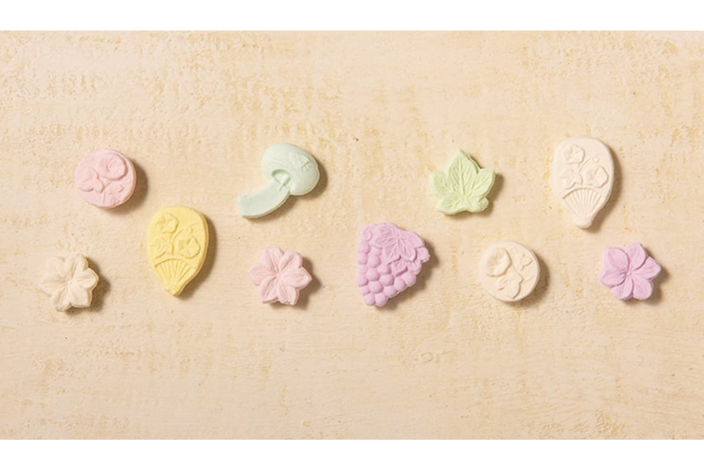
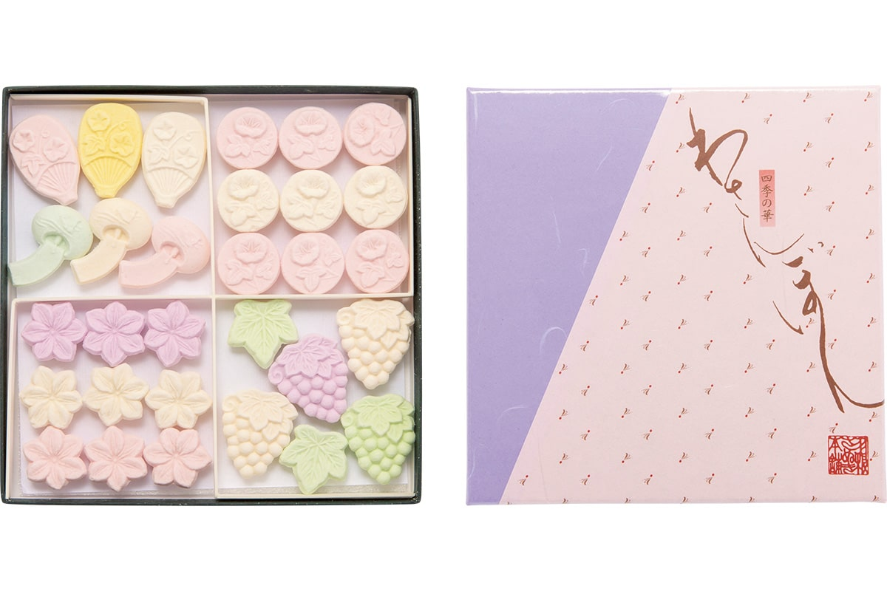
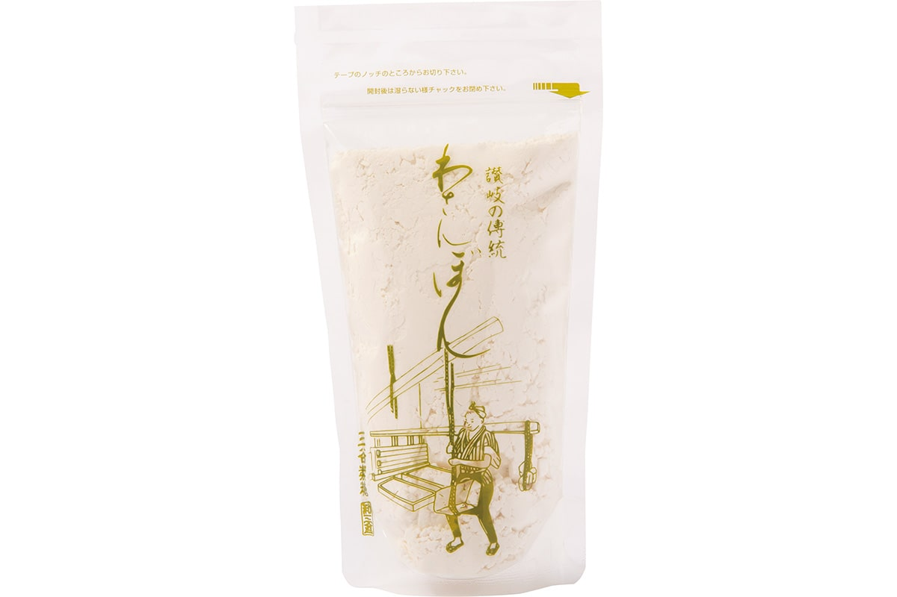
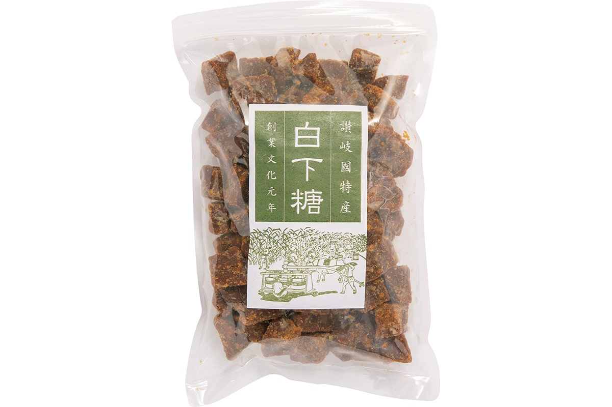

Префектура Кагава · Хигасикагава · сахар
Васамбон и «Сики-но хана» от Митани Сэйто: сахар, который тает на языке

Сахар васамбон из Кагавы и Токусимы тает на языке быстрее любого другого японского сахара. Фабрика Митани Сэйто в Хигасикагаве варит его с 1804 года по старой технологии, и из этого сахара делает сухие сладости «Сики-но хана». Заказать их можно прямо у производителя.
Что такое васамбон
Сахар, который делают отжимом
Васамбон (васамбон-то, традиционный японский сахар тонкой ручной выделки) делают так: сок сахарного тростника уваривают до сиропа сирасита-то, затем этот сироп «шлифуют» (разминают, чтобы отделить патоку), кладут в холщовые мешки и прессуют. Процесс повторяют снова и снова. Так рождается сахар с благородным вкусом, очень мелким зерном и нежным таянием во рту.
Фабрика Митани Сэйто работает с 1804 года: тростник берёт местный, инструменты наследует от предыдущих поколений, и весь процесс держится на ручном труде, как и двести лет назад.
«Этот васамбон вкусен не только в японских сладостях, но и в обычной готовке. А сухие сладости красивы сами по себе. Обычно к васамбону подмешивают крахмальную пудру, но здесь сладости делают из чистого васамбона, без примесей. Такамацу издавна славится деревообработкой, поэтому и деревянные формы заказывают у местных мастеров по собственным эскизам: фигурки сезонных пейзажей и праздничных мотивов. Чувствовать смену сезонов через еду очень по-японски, и заказать такое к себе домой можно только у самого производителя».
Тиэко Мукаса, фуд-журналист
Три продукта
Сладости, сахар и сирасита-то
«Сики-но хана»: сухие сладости
«Летняя» версия сладостей с мотивами сезона; есть и набор «Сюнка сюто» («весна, лето, осень, зима») с фигурками всех четырёх сезонов.
«Сики-но хана»
- Количество
- 30 штук (число зависит от сезона)
- Состав
- сануки васамбон, красители
- Срок годности
- 300 дней
- Цена
- 1 188 иен
- Как заказать
- по телефону, факсу или через сайт

Васамбон-то: сахар
Помимо классического сахара есть и гранулированный: он хорош в кофе и других напитках.

Васамбон-то
- Вес
- 155 г
- Состав
- сахар-сырец (сирасита-то)
- Срок годности
- 300 дней
- Цена
- 648 иен (гранулированный, 180 г: 864 иены)
- Как заказать
- по телефону, факсу или через сайт
Сирасита-то: предшественник васамбона
Сахар-сырец до очистки от патоки: вкус плотный и глубокий, идеален для томлёных блюд.

Сирасита-то
- Вес
- 600 г
- Состав
- сахар (сахарный тростник для васамбона из Кагавы)
- Срок годности
- 300 дней
- Цена
- 1 080 иен
- Как заказать
- по телефону, факсу или через сайт
Митани Сэйто
- Адрес
- префектура Кагава, Хигасикагава, Умаядо, 156-8
- Телефон
- +81 879-33-2224 (заказы: будни 9:00–16:00)
- Факс
- +81 879-33-5578
- Сайт
- wasanbon.com